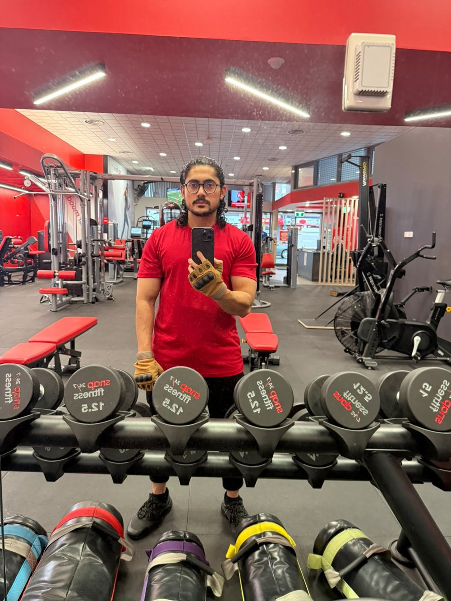
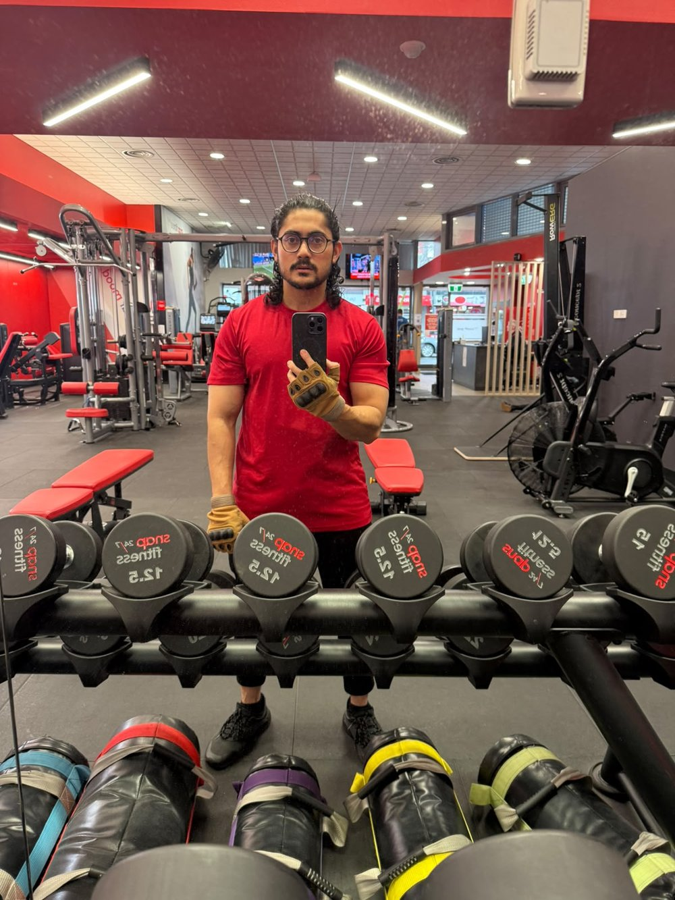

Team Lead · Flagship
Schools Priority Targeting Model
Led a 6-person team through a live 6-month capstone for a real Australian client — ML pipeline across 9,855 schools, delivered into their CRM.
My path here wasn't a straight line — aeronautical engineering, an MBA in Human Resource Management, then a Master of Business Information Systems in Data Analytics. That mix is why I think like an engineer, read a room like an HR analyst, and put both to work in SQL, Power BI, and Python.
● Master of Business Information Systems (Data Analytics) — completing 2026 · PL-300 & DP-900 in progress · MelbourneLed a 6-person team through a live 6-month capstone for a real Australian client — ML pipeline across 9,855 schools, delivered into their CRM.
HR domain experience + machine learning: every employee scored into a High / Medium / Low turnover-risk tier — 344 flagged for action.
1M+ transactions, 5,878 customers, 7 behavioural segments — and a 177× lifetime-value gap between the top and bottom.
Every project leads with the business question, ships with a written insight, and ends with a recommendation someone could act on Monday morning. Repos and stakeholder-style video walkthroughs included.
A six-month industry capstone for a real Australian small-business client, led end-to-end as head of a 6-person cross-functional team. I architected the full ML pipeline on a 9,855-school national dataset — cleaning, feature engineering, a custom priority score, K-Means market segmentation, and a Random Forest validator. One design decision I'd defend anywhere: the target-correlated feature was deliberately excluded from model inputs to prevent data leakage, which made the priority logic independently defensible at client handover. Final delivery: 3,344 high-priority schools identified, an operational Top-200 outreach list ingested directly into the client's CRM, and a 2-page executive Power BI dashboard.
“Special recognition is extended to: Ahmed Al Rafsan (Team Lead and Data Analytics Lead) for providing strong project leadership and delivering sophisticated machine learning and predictive analytics solutions.”
— Official Client Commendation ReportReal HR reporting experience paired with machine learning across 1,470 employee records — built to support proactive retention, not just describe turnover. Logistic Regression and Random Forest with balanced class weights, feature importance to explain the top attrition drivers, 11 SQL business queries, and a 2-page Power BI dashboard with 8 custom DAX measures. Every employee scored High / Medium / Low risk; 344 flagged for HR action.
1M+ UK online-retail transactions through a 7-script Python pipeline (1.07M rows cleaned to 805K), an RFM scoring system classifying 5,878 customers into 7 behavioural segments, and a 177× customer-lifetime-value gap between top and bottom. Headline finding: 75–80% of new customers churn within the first month — onboarding is the single highest-leverage retention fix. Delivered as a 3-page executive dashboard.
Root-cause investigation of an 89% revenue decline across 24 months of sales data. Ten SQL queries (GROUP BY, HAVING, LAG) traced the collapse: 92% of customers — 137 of 149 — went inactive, and the single top customer, worth 12.7% of total revenue, went dormant. Delivered four executive recovery recommendations via a 4-page dashboard.
Explored 20+ years of Victorian Government open data on CBD business establishments — identified 45% growth in the CBD business base and flagged vacant-space trends as a forward indicator for the city's recovery story.
260k+ chip transactions analysed; customers segmented by lifestage × premium tier; trial-store layout uplift evaluated across 3 locations.
Conditional aggregation on 50k+ records, PII anonymisation aligned with the Australian Privacy Act, and a 5-table relational schema designed in 3NF.
Tableau dashboard on 160k+ IoT telemetry records across 4 factories, plus a forensic pay-equity classification for an HR audit scenario.
No vague "proficient in Microsoft Office" lines. This is the honest depth map I hold myself to — deep in the core, working across the arm, aware at the edges. Every "proficient" claim below has a project behind it.
Seven checks, same order, every dataset, no exceptions. The signature discipline behind every project on this site — because inconsistency is where wrong numbers hide.
Right now I'm finishing a Master of Business Information Systems (Data Analytics) at the Australian Institute of Higher Education in Melbourne. My week runs on the unglamorous parts of the craft done well: cleaning messy data with a framework I built myself, asking the right question of it in SQL, and shipping the dashboard that turns "here are some numbers" into "here's what we do about it."
Alongside study I hold down retail work — the kind of schedule that teaches you exactly what a disciplined hour is worth.
Before Australia, I was an HR Executive in Organisational Development at Kazi Farms Group, one of Bangladesh's largest food companies (Sep 2022 – Feb 2024). I owned the enterprise performance-evaluation cycle for a workforce of 500+ — collecting, validating, and analysing the KPI data almost entirely in Excel, with pivot tables and Power Query as my daily tools, feeding directly into increment and promotion decisions.
I sat with the CEO and general managers to define and challenge the KPIs on senior leadership scorecards, flagged the unmeasurable ones, and built the monthly executive reports leadership actually used. I learned to translate a number into a decision years before I wrote my first line of SQL.
Before that, I trained as an aeronautical engineer — a Bachelor of Engineering in Aircraft Design and Engineering from Nanchang Hangkong University in China (2014–2018). The most useful part wasn't the classroom; it was hands-on training at HNA Aviation Technic, working through real aircraft maintenance procedures, where skipping a step isn't just wrong — it's dangerous.
That respect for process is exactly what I bring to a dataset: check it properly, or don't trust what it tells you.
From here the plan is specific: deepen as a data analyst now, grow into the analytics-engineering bridge — SQL, dbt, Git, cloud warehousing — and from there into AI-focused analytics engineering. Same thread the whole way: technical rigour a business can actually use.
Three fields, three countries, one profile: a T-shaped analyst — deep where it counts, wide enough to collaborate everywhere else.
None of this is technical. All of it is how the technical work gets done.
I train three to four days a week, and none of it is random. The year runs in structured phases — building phases and cutting phases, each with its own targets — the same way a serious project runs in iterations rather than one heroic push.
The inputs get tracked like any dataset I'd stake a decision on: protein targets hit daily, water intake non-negotiable, sleep treated as infrastructure rather than leftovers. Progressive overload is just version control for the body — small, deliberate increments, logged, compounding.
I'm not chasing a stage. I'm keeping a promise to show up — in the gym at six the same way I show up to a messy CSV: consistently, with a plan, until the work is done.


My workspace was built the way my career is being built — piece by piece, on a student budget, each addition earned. A standing desk. A walking pad under it. A proper keyboard and mouse. Nothing expensive; everything deliberate.
Resourcefulness is easy to claim in an interview and hard to fake in person. This is what mine looks like.
Neither of these is on my resume. Both are why the resume keeps getting better.
Short, practical writing on the tools I use every day — what surprised me, what the defaults hide, and how I actually think about the craft. One post a month.
Every analyst has a cleaning process. Most never write it down — which means it changes a little every time, and the mistakes change with it.
Early in my portfolio work I kept catching the same class of error at different stages: a duplicate check I'd done on one project and skipped on the next, an outlier review that happened before validation here and after it there. Nothing catastrophic. Just inconsistent — and inconsistency is where wrong numbers hide.
So I fixed it the way an engineer would: I standardised the sequence. PCUVCOD — Profile, Completeness, Uniqueness, Validity, Consistency, Outliers, Document. Seven checks, same order, every dataset, no exceptions.
It sounds rigid. In practice it's the opposite. Once the sequence is automatic, the analysis gets faster, because I'm never wondering whether I already checked for nulls three steps back. The checklist runs; my attention goes to what the data is saying.
The "D" earns its place most often. On my Fashion Retail investigation, documented cleaning steps let me trace an 89% revenue collapse back through the source data's structure in minutes instead of re-auditing the whole pipeline. Write down what you did to the data. Future-you is the first stakeholder you owe an audit trail.
VLOOKUP taught a generation of analysts three quiet bad habits: count your columns, hope nobody inserts a new one, and accept an approximate match you never asked for.
XLOOKUP removes all three — it searches any direction, returns exact matches by default, and doesn't break when the sheet grows. But the interesting part isn't the feature list. It's what the defaults say.
Every tool encodes assumptions. VLOOKUP's defaults assume your data is sorted and your structure is frozen. Real business spreadsheets are neither. Half the "Excel is unreliable" stories I've heard trace back to a default the analyst never questioned.
So the habit I've built — in Excel and everywhere else — is asking one question before trusting any function: what is this assuming that I haven't checked? INDEX-MATCH, SUMIFS, a DAX measure, a pandas merge — same question every time.
The tool is rarely wrong. The unexamined default usually is.
You can use Power BI for months without understanding filter context. Your dashboards will even work — until the day a total doesn't match a detail row and you can't explain why.
That day is usually when CALCULATE starts making sense. It's the function that modifies filter context: it takes the filters a visual hands to your measure, and rewrites them. Every "why is this number wrong" mystery I've debugged in DAX came down to context someone didn't know they were changing.
The mental shift that made DAX click for me: a measure isn't a formula, it's a question whose answer depends on where it's asked. The same measure returns different numbers in different visuals because each visual asks from a different context. Once that lands, CALCULATE stops being intimidating and starts being the steering wheel.
My rule for every measure I ship: state in one sentence which filters it respects and which it overrides. If I can't, the measure isn't finished — I just haven't found the wrong number yet.
Open to Junior Data Analyst, Reporting Analyst, Insights Analyst, and People/HR Analytics roles — Melbourne, Australia.